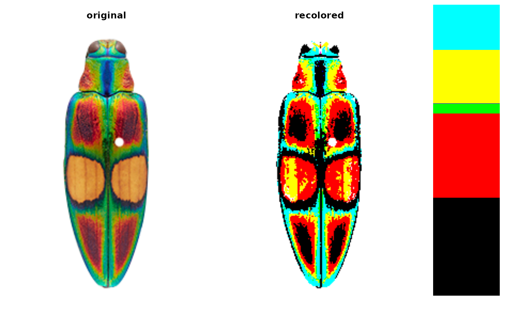
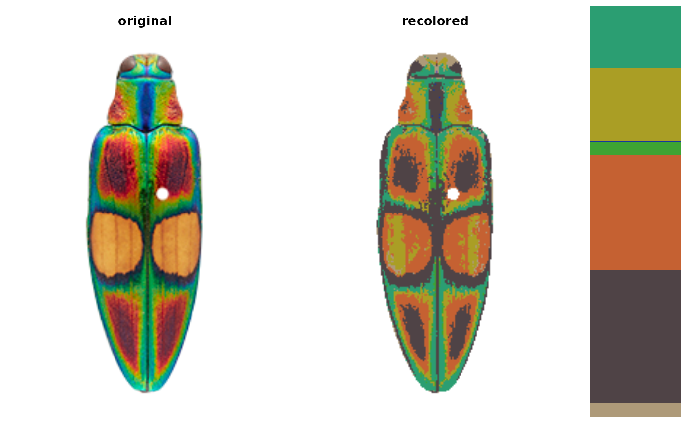
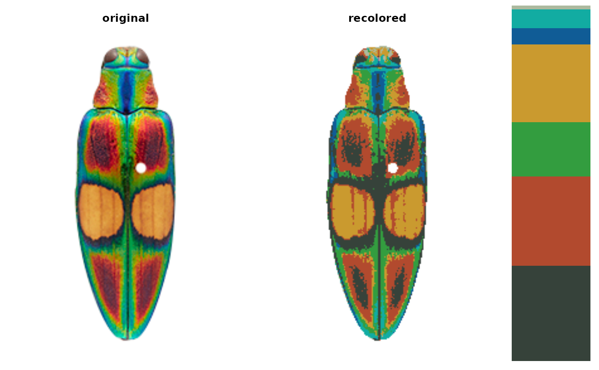
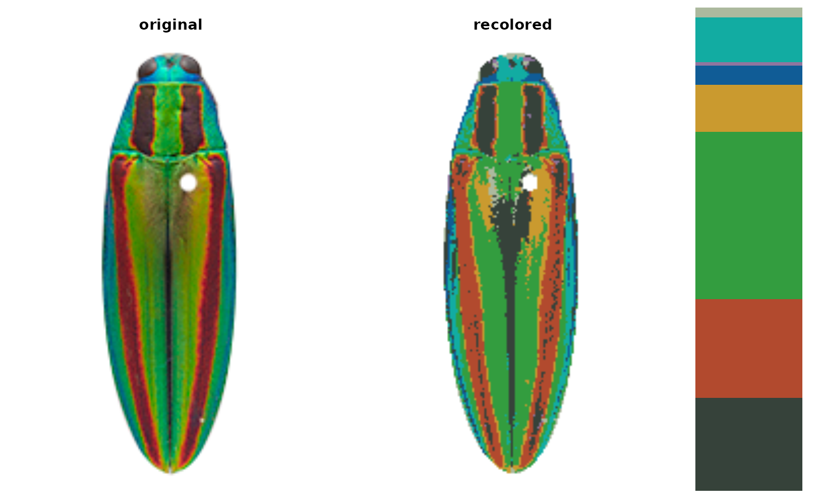
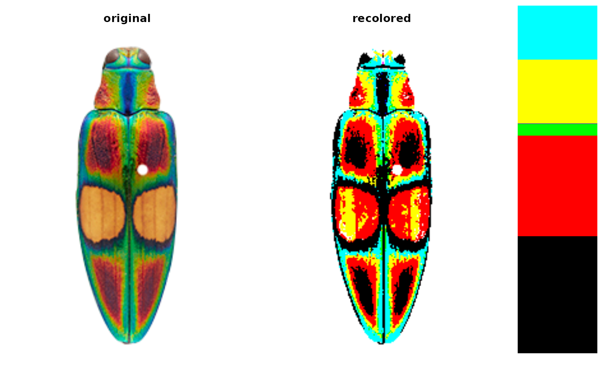
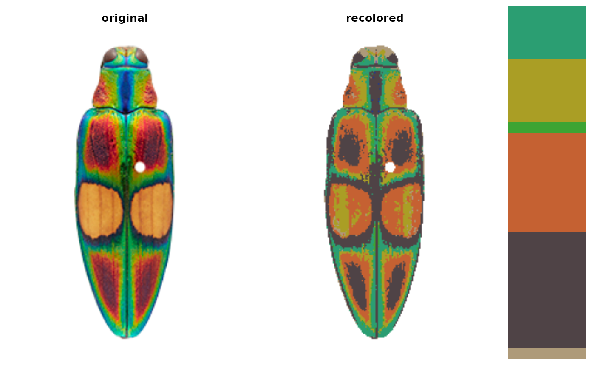
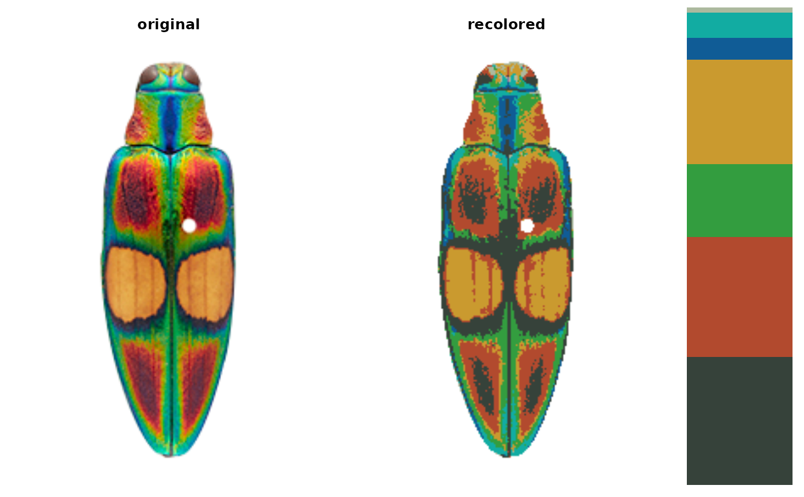
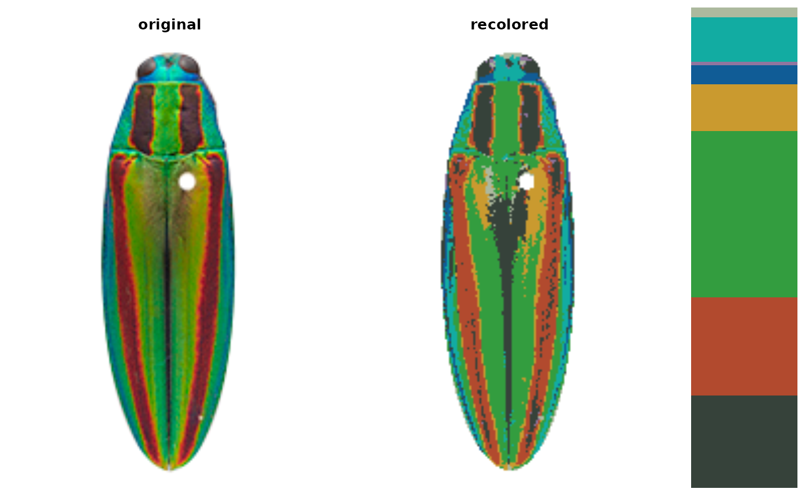

Takes an image and a set of color centers, and assigns each pixel to the most similar provided color. Useful for producing a set of images with identical colors.
Usage
imposeColors(
img,
centers,
adjust_centers = TRUE,
color_space = "sRGB",
ref_white = "D65",
lower = NULL,
upper = NULL,
transparent = TRUE,
resid = FALSE,
resize = NULL,
rotate = NULL,
plotting = TRUE,
horiz = TRUE,
cex_text = 1.5,
scale_palette = TRUE
)Arguments
- img
Path to the image (a character vector) or a 3D image array as read in by
png::readPNG(){readImage}.- centers
Colors to map to, as an n x 3 matrix (rows = colors, columns = channels).
- adjust_centers
Logical. After pixel assignment, should the returned colors be the average color of the pixels assigned to that cluster, or the original colors?
- color_space
Color space in which to minimize distances. One of "sRGB", "Lab", "Luv", "HSV", or "XYZ". Default is "Lab", a perceptually uniform (for humans) color space.
- ref_white
Reference white for converting to different color spaces. D65 (the default) corresponds to standard daylight.
- lower, upper
RGB triplet ranges for setting a bounding box of pixels to mask. See details.
- transparent
Logical. Treat transparent pixels as background? Requires an alpha channel (PNG).
- resid
Logical. Return a list of different residual metrics to describe the goodness of fit?
- resize
A value between 0 and 1 for resizing the image (ex.
resize = 0.5will reduce image size by 50%). Recommended for large images as it can speed up analysis considerably. See details.- rotate
Degrees to rotate the image clockwise.
- plotting
Logical. Plot recolored image & color palette?
- horiz
Logical for plotting. Plot output image and color palette side by side (
TRUE) or stacked vertically (FALSE)?- cex_text
If
plotting = TRUEandscale_palette = FALSE, size of text to display on the color palette numbers.- scale_palette
Logical. If plotting, plot colors in the color palette proportional to the size of each cluster?
Value
A list with the following attributes:
original_img: The original image, as a raster.centers: A matrix of color centers. Ifadjust_centers = FALSE, this will be identical to the inputcenters.sizes: The number of pixels assigned to each color cluster.pixel_assignments: A vector of color center assignments for each pixel.call: The call(s) used to generate therecolorizeobject.
Details
Background masking: lower, upper, and transparent are all background
masking conditions. Transparency is unambiguous and so tends to produce
cleaner results, but the lower and upper bounds can be used instead to
treat pixels in a specific color range as the background. For example, to
ignore white pixels (RGB = 1, 1, 1), you might want to mask all pixels whose
R, G, and B values exceed 0.9. In that case, lower = c(0.9, 0.9, 0.9) and
upper = c(1, 1, 1). Regardless of input background, recolored images are
returned with transparent backgrounds by adding an alpha channel if one does
not already exist.
Resizing: The speed benefits of downsizing images are fairly obvious (fewer pixels = fewer operations). Because recoloring the images simplifies their detail anyways, downsizing prior to recoloring doesn't run a very high risk of losing important information. A general guideline for resizing is that any distinguishable features of interest should still take up at least 2 pixels (preferably with a margin of error) in the resized image.
Examples
# RGB extremes (white, black, red, green, blue, yellow, magenta, cyan)
ctrs <- matrix(c(1, 1, 1,
0, 0, 0,
1, 0, 0,
0, 1, 0,
0, 0, 1,
1, 1, 0,
1, 0, 1,
0, 1, 1), byrow = TRUE, ncol = 3)
# plot it
recolorize::plotColorPalette(ctrs)
 # get image paths
ocellata <- system.file("extdata/ocellata.png", package = "recolorize")
# map to rgb extremes
ocellata_fixed <- recolorize::imposeColors(ocellata, ctrs,
adjust_centers = FALSE)

# looks much better if we recalculate the centers from the image
ocellata_adjusted <- recolorize::imposeColors(ocellata, ctrs,
adjust_centers = TRUE)

# we can map one image to extracted colors from another image
# extract ocellata colors
ocellata_colors <- recolorize(ocellata)
#>
#> Using 2^3 = 8 total bins

# map fulgidissima to ocellata colors
fulgidissima <- system.file("extdata/fulgidissima.png",
package = "recolorize")
fulgidissma_ocellata <- recolorize::imposeColors(fulgidissima,
ocellata_colors$centers,
adjust_centers = FALSE)

# get image paths
ocellata <- system.file("extdata/ocellata.png", package = "recolorize")
# map to rgb extremes
ocellata_fixed <- recolorize::imposeColors(ocellata, ctrs,
adjust_centers = FALSE)

# looks much better if we recalculate the centers from the image
ocellata_adjusted <- recolorize::imposeColors(ocellata, ctrs,
adjust_centers = TRUE)

# we can map one image to extracted colors from another image
# extract ocellata colors
ocellata_colors <- recolorize(ocellata)
#>
#> Using 2^3 = 8 total bins

# map fulgidissima to ocellata colors
fulgidissima <- system.file("extdata/fulgidissima.png",
package = "recolorize")
fulgidissma_ocellata <- recolorize::imposeColors(fulgidissima,
ocellata_colors$centers,
adjust_centers = FALSE)
